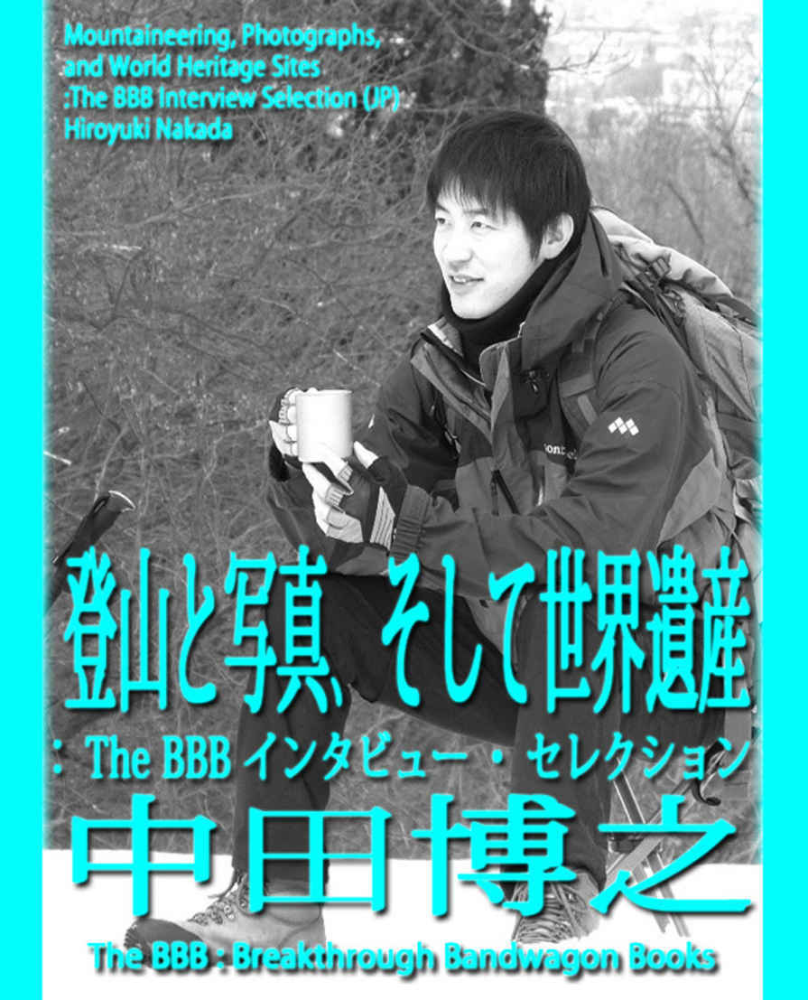
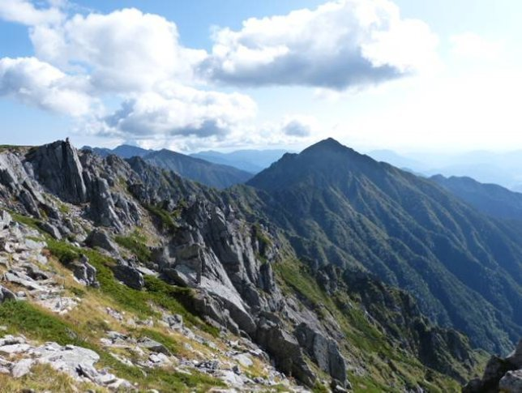
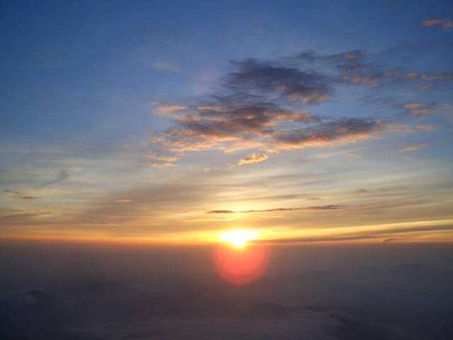
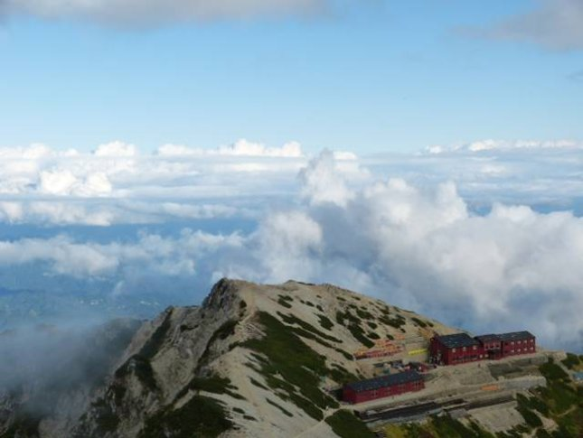
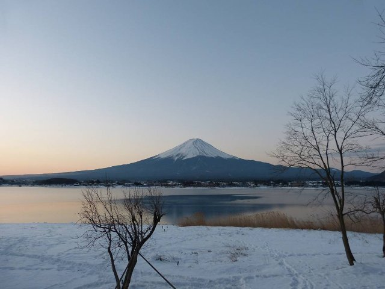
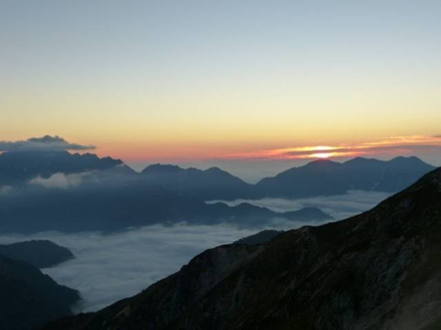
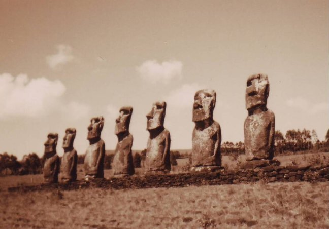
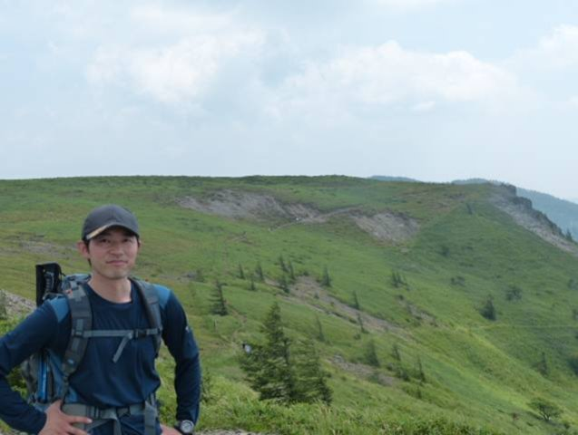
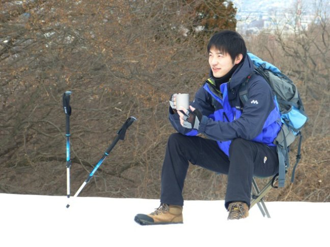

| 登山と写真、そして世界遺産 (The BBB: Breakthrough Bandwagon Books) | |
| 中田博之 | |
| The BBB: Breakthrough Bandwagon Books (2015) | |

（邦題『登山と写真、そして世界遺産（ The BBB インタビュー・セレクション）』）
Originally t old in Japanese by Hiroyuki Nakada
Translated by Ryusui Seiryoin
Cover Photo by Hiroyuki Nakada
Cover design by Tanya
Copyright © 2014 Hiroyuki Nakada / The BBB : Breakthrough Bandwagon Books
All rights reserved.
ISBN 978-1-312-14548-1
（ 1. 登山のきっかけ）
The BB B 編集部 （ 以下、 B ） : 中田さんは登山写真家であり、世界遺産検定の最高位である「世界遺産検定マイスター」の資格もお持ちですよね。まず、登山のことからお話を伺いたいのですが、そもそも中田さんにとって、山というものの原体験は、どのようなものだったのですか？最初は、どうして山にご興味を持たれたのですか？
Nakada : 私の家族や周囲では誰も山に登る人はいなくてアウトドアとは無縁でしたが、子どもの頃から自然は好きでした。興味を持ったきっかけとしてひとつ思い当たるのは、小学生時代のある夏の日、学校からの帰り道に歩道橋を渡っていた時、ものすごい入道雲を見たんです。真っ青な空をバックに巨大な入道雲がとても綺麗で見とれていると、それが段々と雪山のように見えて、あんなところに登って歩けたら気持ちいいだろうなと思いました。その光景は今でもはっきり目に焼き付いていて、その時が山に興味を持った瞬間だと思います。それと、子どもの時から高い場所が好きで、よくこっそり家の屋根に登って雲や星を眺めるのが好きでした。山はまさに雲や星に近いですから、必然的に山を求めていたかもしれませんね。そういうわけで大学に入るまではテントで寝たこともありませんでしたが、自由な時間が持てたら山に登りたいという気持ちが自然と強くなっていて、大学に入学後はワンダーフォーゲル部に入部しました。
B : ワンダーフォーゲル部に入ってどうでしたか？
Nakada : 最初に登った山は神奈川県にある丹沢山（たんざわさん）で、そこは標高 1,500m 程でわりと初心者向けの山でした。たいしてきつくなく全然もの足りなかったですが、初めて山でテントに泊まったことで自然に溶け込むような体験に魅了されました。続いて６月に、長野県にある八ヶ岳（やつがたけ）に５泊６日の合宿に行きました。だいぶ本格的な登山になるので、天気図の読み方や応急処置の仕方などを学び、トレーニングも十分に行いました。大学に部活やサークル用の５階建ての大きい建物があるのですが、その長い階段が練習場所でした。重さ 30 kg 程あるリュックを背負って、１階から５階まで 10 往復します。最初は１段ずつ昇って、次は１段抜かしとかで。こんなに重いものを背負うのは初めてだし、そのうえ階段ともなるとかなりきつかったですが、ストイックになってトレーニングする自分をある意味楽しんでいました。
B : それは実際、トレーニングしないと保たないくらい、きつい登山なんですか？
Nakada : 実際に八ヶ岳に登った時は、ずっと雨だったんです。自然が自分たちをあざ笑っているかのように、山にいる間はほとんど雨で下山したら晴れました。５～６人のパーティで登るのですが、荷物の運搬に関しては、テントを持つ人とか食材や食器類を持つ人とか、ひとりひとりに役割分担があります。自分はガタイが大きかったので、テントを運ぶことになりました。テントだけでもかなりの重さでしたが、雨で塗れると相当な重さになり、リュックを降ろしたときは本当に肩の感覚が無い程でした。実際の山の状況とは違いましたが、階段往復のトレーニングが役に立ったと思います。
B : ５泊６日、ずっとそれを背負い続けて？
Nakada : そうです。背負うときは本当にうんざりしますが、歩き出すと体も慣れて意外と登れるものでした。しかし、頂上に登っても霧と雨で景色は見えず、何のためにこんなつらい思いをして登っているのだろうと思うようになりました。 6 月とはいえ、山の上はまだ雪が残っていて、雪山のようなところもありましたが、小学生のとき見た雲の雪山の幻想とはまるで違うものでした。当時は、山のこともあまり知らないので、何も雨なのに登らなくてもと思ったものですが、山での雨は当たり前で、それ以降天気はいつ崩れてもおかしくないという心構えでいました。その時は、あまりの荷物の重さと天候の悪条件でツラさしかなく、登っているときは早く帰りたいとばかり思っていました。
B : そんな体験をしたら、山が嫌いになりそうですけどね。
Nakada : 確かに、私もこれで山が嫌いになると思いました。ところが、登っているときはあんなにつらかったのですが、山から帰って日常に戻ると不思議なものでまた登りたくなるんですよね。条件が悪いとはいえ、登りきったときの達成感がたまらないからでしょうか。自分に打ち勝ったような快感がありました。山に限ったことではありませんが、つらい時間が長い分だけ達成したときの喜びは大きくなりますから、この時の体験で、つらいことでもポジティブに考えられるようになったと思います。
B: 最初にそういう体験をされた後は、どのように活動されたんですか？
Nakada : そのとき、もうひとつボランティア系のサークルにも所属していて、２年生以降は、そっちの活動がメインになり、山は個人で登るようになりました。それと、ワンダーフォーゲル部には悪習みたいのがありまして、それが嫌だったというのもあるのですが。例えば、大きな鍋でカレーを作り、食べた後、鍋についたカレーをお湯で溶いたものを飲まされるとか、登頂した際に多くの登山者の前で大声で自己紹介させられるとか。単純に山が好きなのに、ちょっとそういうノリにはついていけませんでした。卒業後、働き始めてからはあまり時間もとれず数年、山から遠ざかっていましたが、あるとき、これまで富士山に登ったことがないことに気付き、日本人なら一度は登らなくてはという思いもあり、早速挑戦することにしました。やはり、せっかく登るなら御来光を拝みたいと思って計画を立てたところ、平日の仕事の後に登ることにな りました 。

（ 2. 富士山へ ）
B: 仕事の後に富士山ですか？
Nakada : 日程の都合などもあったのですが、８月のある日、仕事を午後５時に終え、一人で車を飛ばし富士山の５合目に向かいました。職場からは行きやすく、午後７時半頃に着くと５合目には同じような人たちが大勢いました。５合目でしばらく体を高度に順応させ、車で着替えて準備をし、少し仮眠しようとしましたが、興奮していて寝付けませんでした。そして、午後９時頃からいよいよ頂上を目指して登り始めました。最初はなだらかな道が続き、順調に登っていきます。登っているときは暑くてシャツ一枚でもいいぐらいですが、高度も上がってくると風も強く、ちょっと休んだだけで真冬並みの寒さとなります。それと眠さもあって、途中で意識が朦朧となることが何度かありました。だんだんと疲労も重なり寒さと眠さと戦いながら、いつまで続くのかと思いながらもただ黙々と登って行きました。他の登山者もきつそうで、お互いに励まし合いながら登っていました。周囲からの「これは一人じゃ絶対登れないよね」との声に発奮し、何度もくじけそうになりながらも、ついに日の出前には登頂することができました。
B: 五合目から、何時間くらいかかるんですか？
Nakada : コースにもよりますが、そのとき登ったコースはアクセスがよく登山道も歩きやすい吉田ルート（別名「河口湖ルート」）で、休憩を入れながらゆっくり登り、だいたい７～８時間ぐらいでしょうか。ただ、週末ともなると頂上付近は渋滞して動けなくなるほどです。御来光を拝むのに、自分のように夜通し登る人もいれば、山小屋に泊まって真夜中からから登り始める人もいます。その後に登ったときは、混んでいてなかなか進めず登頂できずに、９合目あたりで御来光を拝むこともありました。
B: 初めて御来光を見た時はどうでした？
Nakada : 最初の時は一人で登ったので不安もありましたが、ネットで実際に登った人のホームページを参考にし、他の登山者に積極的に話しかけ、問題なく登頂できました。登頂したときは、これまで登った山とは違う特別な達成感があり、他の登山者と喜びを分かち合いました。そして、御来光の瞬間は本当に感動的でした。雲海の向こうからだんだんと明るくなってくると、一面黄金の光に包まれ、疲れも寒さも一気に吹き飛び、体に力が漲ってくるのが分かりました。当たり前のように毎日繰り返される自然の営みですが、見る場所が違うとこうも感動でき、こうして昔から人類は自然と共に生きて、生きる力をもらっていたのだと感じました。

B: 夜は、月明かりとかで視界が効くんですか？
Nakada : 明るい月が出ていて条件がよければ、ヘッドライトがなくても視界は効きます。月明かりを頼りに登るのは幻想的でワクワクしますよ。それと、すごい数の人が登るので、富士山の夜間登山の名物ともなっているヘッドライトの道ができます。暗い景色の中に光の筋がうねりながら天に続いている感じです。人が多いので、遭難することはまずないですし、何合目とかに山小屋がいくつもあるのでそこを休憩の目安にしています。それと、晴れていれば空は満点の星で、流れ星もよく見えて、宇宙の中にいるのを実感できます。アプリの「 Google Star 」を使えば、星座の位置が簡単に分かりますし、満天の星を楽しむのも夜間登山の醍醐味といえます 。
B: その夜だけで、登った人は、だいたい、どのくらいいました？海外からの登山者は、どのくらいですか？
Nakada : 数千人はいたでしょうね。感覚としては、外国人登山者は 10 ％くらいはいたでしょうか。最近はアジア圏の外国人も目立ちます。各国の日本のガイドブックでは必ず紹介されていますし、とにかくよく見かけました。途中で休憩しているときは、コミュニケーションを取ると同じ目標を共有しているので、国籍を問わず自然と親しくなれます。夜中の登山はかなり寒いですが、半袖短パンの外国人登山者もたまに見かけます。その後、現在までに７回登っていますが、初心者を連れてガイドして登ったこともあります。そのとき登った人達は皆、このエキサイティングな体験は人生で達成したベスト 3 には入ると言って感激していました。
B: 中田さんは、よく富士山の写真を撮られていますが、中田さんにとって富士山はやはり特別な存在ですか？
Nakada : そうですね。富士山自身の見た目の美しさにも惹かれますし、どこから見ても風景に溶け込む存在で、見ているだけでエネルギーをもらえます。実際に登ることで、その雄大さは改めて実感できますし、古（いにしえ）より信仰の対象とされてきたのも分かる気がします。４つある登山ルートもそれぞれ特徴があり、自然を楽しんだり、難関ルートに挑戦したり、違う富士山が味わうことができます。そして、登頂者にだけ許される日本一の絶景は生涯忘れることができなくなるでしょう。静寂な空気の中で宇宙を実感できて、御来光に感動したように、自然の神秘、美しさに畏敬の念を感じないではいられない富士山はやはり特別な存在と言えます。
（ 3. 山の魅力）
B: 富士山以外で、特に印象に残っている山などはありますか？
Nakada : 富士山は比較的登りやすいと思いますが、鋭い山が多く、圧倒的なスケールで立ちはだかる北アルプスにはよく行きます。断崖絶壁のようなところを登っていくので非常にスリルがあり、富士山とは異なる登山の醍醐味が味わえます。一歩間違えば滑落して命を落としますし、実際に毎年痛ましい事故が後を絶ちません。本当に危険ですが、それでも登らずにはいられないです。その中でも何年か前に奥穂高岳（ 3,190m ）に登ったのですが、途中で悪天候に見舞われて雨が激しくなり、滝のようになった断崖を登って行かねばなりませんでした。かなりペースが遅くなりだんだんと日が暮れかかってくる中、他に登山者もいなく不安は増すばかりでした。荷物も肩に食い込む重さで、途中で休みも取りたかったですが、まさに時間との戦いだったので必死で頂上を目指しました。頂上を超えた向こうに山小屋があるので、そこに辿り着くまでは体がつらくても気にしている状況ではありません。一心不乱で登り、どうにか頂上に着いたときはすっかり薄暗くなり、視界も悪く、ほとんど遭難しかけていました。かなりやばい状況だったので登頂を喜ぶどころではなく、すぐに山小屋を目指して頂きを降りていきました。辺りはほとんど暗闇になっていて、ここで滑落でもしたらなどと最悪の状況が頭によぎる中、暗闇の中に山小屋の光が浮かび上がりました。それを見た瞬間、思わず「助かった」という言葉が自然と口から出ていました。このときの経験でどんな状況でも必死になれば想像以上の力を振り絞れるということを学び、以後、時間や安全確保には十分注意するようになりました。そして、この日はテントで泊まる予定でいましたが、この雨では無理なので予定を変更して山小屋に泊まることにしました。
B: 山小屋とテントでは、どういう違いがありますか？
Nakada : それまでテントを背負って登ることが多かったのですが、この遭難しかけたときに山小屋の快適さを知りました。山小屋は布団があり食事も取れるので、なにより荷物が軽くて済むのでありがたいです。山小屋の夜は早いです。夕方ご飯を食べたら、多くの人はすぐ寝ます。でも、団欒（だんらん）できるスペースがあり、テレビを見たり、読書をしたり、他の登山者と交流することも出来ます。他の登山客と泊まるわけですから消灯や食事の時間は拘束されますが、その点、テント泊はひとりになれて時間も自由に使えて非常に気楽です。ですが、テント泊の場合は、テントはもちろん、寝袋、マット、食糧、調理器具などで荷物は重くなるわけです。それぞれメリット、デメリットがあるので、登る山や日程に合わせて使い分けています。
B: その他に登山の魅力は何でしょう？
Nakada : まずは、山に登ると普段悩んでいたことが小さなものに思えて、心がスッキリして穏やかになれます。人間は小さい存在だと偉大な自然に教えられますね。忙しい日常で心に余裕がないときは、よく近くの山に日帰りで行って英気を養ってきます。また、そこでしか見られない高山植物や登山中に特別天然記念物のライチョウ、オコジョ、シカなど動植物と触れ合えるのも楽しみのひとつです。そして、下山後の最大の楽しみに温泉があります。日本人は温泉好きですが、登山後の温泉は格別です。基本的に山小屋でもお風呂はありませんから下山後の温泉で思い切りリラックスして、今登ってきた山を追想します。日本はもともと国土が狭いうえに火山国なので、至るところに天然温泉がありますから、登山に行くときは必ず利用しています。
B: 今後の目標は？
Nakada : まずは、「日本の百名山」すべてに登ることと登山の経験がない人にも山の魅力を伝えていきたいと思います。登るには道具を揃えたり体力づくりなど準備が必要ですが、最初は少し面倒でもその先には日常では得られない感動が待っていますからね。よく周囲から「なんでそんなつらい思いまでして登るの？」と聞かれることもありますが、それは一度でも山に登れば分かります。登山で得た経験は大きな自信となって自分の生き方にもプラスになるので、次々と他の山を登りたくなると思います。それと、少しずつ海外の山にも挑戦していきたいですね。そして、いつか見た入道雲のような雪山を登れる日を楽しみに待っています。

（ 4. 写真の世界へ）
B: では、次に、写真についても質問させてください。写真へのこだわりは昔から？
Nakada : ぜんぜん、こだわりはなかったです。１枚の写真がきっかけです。たまたま撮った富士山の御来光の写真が、関係者の方に気に入ってもらえて、世界遺産アカデミー（ NPO ）の会報誌の表紙に使っていただけることになりました。そこから自分でも写真への関心が強まっていきました。その頃、世界遺産アカデミーの会員証に富士山の写真を使うことになったので、何度も富士山に通って写真を撮るようになりました。富士山周辺には絶景スポットが多く、撮影する時間、雲の様子によっても富士山の表情がまったく異なるので、写真を撮る楽しさに引き込まれていきました。日の出の写真を撮るときは、雪が積もる寒い中でその瞬間を待っていましたが、ワクワクして不思議と寒さも感じませんでした。

B: 写真家に向いていたんでしょうね。
Nakada : そうなのかもしれません。それまでは、特に探検家であり写真家でもある星野道夫さんの大自然の写真集を見るのが好きでしたが、いざ自分が撮ってみると写真の世界は奥が深く、納得の写真が撮りたい一心でどんどん写真の世界にのめり込んでいきました。今ではカメラの性能も向上し誰でもある程度いい写真を撮ることができますが、それでも自分の感動を写真で伝えるのは難しいので、これからもっと経験を積んで、納得できる１枚を撮りたいと思います。
B: 中田さんの撮影される写真は、いつも構図が綺麗ですが、写真を撮る時のこだわりはありますか？
Nakada : まず、単純に目で見て美しいと思ったところが、撮影ポイントだと思っています。そして、ファインダーを覗いて「いいな」と思った時に撮る感じですね。それには被写体を意識して全体のバランスを考え、立ち位置を変えたり角度を変えたりしながら、自分の中で納得がいったら撮ります。
B: そうした直感的な部分こそが才能だと思いますね。では、今後、写真でやってみたいことは？
Nakada : 今後も山の写真を撮り続けていきます。山の表情は太陽の光が大きく関わってくるので時間帯と場所にこだわり続け、また、その季節ならではの美しさも残したいので、一年中撮っていたいです。その他に、風景を引き立たせるのに雲の存在は欠かせません。雲も太陽の光によっても色が変わりますから、山と雲が織りなすコントラストを意識して、美しい写真を撮りたいと思います。ですが、美しい自然を狙って撮るのは難しく、同じ写真は二度と撮れないので一瞬一瞬を大切にして撮りたいと思います。

また、山の写真だけでなく遺跡や建築物にも興味があるので、世界遺産を中心に撮ってみたいですね。世界遺産は圧倒されるものが多いので、写真の被写体としてはベストだと思います。以前、インドのタージマハルに訪れたことがありますが、それを見た時は、あまりの美しさに鳥肌が立ちました。左右対称の美しいシルエットにその白さが際立っていて、圧倒されたのを覚えています。また、ヨーロッパを旅したとき、ドイツの大聖堂やノイシュヴァンシュタイン城の美しさには息を飲み、スペインのサグラダ・ファミリアを訪れたときは人間の可能性と創造力に言葉を失いました。その他、中東やアフリカでもそれぞれの文化が建築物に色濃く反映しているので、まだまだ撮りたいものは沢山あります。
B: 中田さんが撮影するピラミッドやマチュピチュの写真は、すごいものになりそうですね。
Nakada : 世界遺産を代表するピラミッドやマチュピチュは実際に見たら、間違いなく圧倒されるでしょう。圧倒されるものは理屈抜きに心が震えて感動しますし、誰が撮っても美しい写真になるとは思いますが、自分の直感に従って納得の一瞬を撮りたいです。１枚の写真がきっかけで写真の世界にのめり込みましたが、そのきっかけになった富士山の御来光の写真は初心を忘れないためにも、いつも持ち歩いています。
（ 5. 世界遺産から学べること）
B: 中田さんと言えば、世界遺産検定の最高位である「世界遺産マイスター」の資格をお持ちですが、そもそも、なぜ世界遺産にご興味を持たれたのですか？
Nakada : 元々、大自然や遺跡、城や教会などの建築物が好きだったので、世界遺産のテレビ番組や図鑑はよく見ていました。世界遺産は見た目の美しさだけでも圧倒されますが、その背景にある歴史や文化、芸術など様々なことを学ぶことができます。以前から歴史、文化、芸術等には興味があり、そういった自分が好きなもの全てを学べる世界遺産に惹かれていたわけですが、そんな中、世界遺産検定というものがあることを知りました。
B: 世界遺産検定での学習はどうでしたか？
Nakada : 世界遺産検定の存在を知ったときは、自分が好きなことの検定試験があるのが嬉しくて、最高位であるマイスターは絶対取ろうと決めて、それが揺らぐことはありませんでした。学ぶにつれて知的好奇心が刺激され、好きなことを学んでいるので全然苦はなく、とにかく楽しみながら学べました。そして、学んだ後に実際にその世界遺産を訪れるとその感動は何十倍も違ってくるので、知らないことはもったいないことだと思いました。
B: 「世界遺産マイスター」の資格をお持ちだと、審査や研修などを受けて、認定講師として活動されるケースも あるんですよね。将来的に、そうした活動へのご興味は、あります か？
Nakada : そうですね。今では世界遺産は多くの人に認識されるようになりましたが、その見た目の凄さだけでなく、その背景を知ることで楽しみ方も違ってきます。また、世界遺産は見た目に圧倒されるものばかりでなく、人間と自然の相互作用によって生み出された文化的景観と呼ばれるものもあります。これは庭園のように人間が自然の中に作り出した景色、あるいは田園や牧場のように産業と深く結びついた景観のように自然と人間が関係し合って文化を営んできた遺産ですが、こ うした遺産が持つ素晴らしさを多くの人に伝えていきたいと思います。
B: 中田さんご自身は 、世界遺産とは、今後、どういうふうに、つきあっていきたいですか ？
Nakada : 自分にとって多くのことが学べる世界遺産の存在はありがたいので、マイスターの称号に満足することなく、これからも学び続け、実際に訪れて感動を味わい続けたいと思います。また、世界遺産は、いまや１０００件近くにも増えましたが、災害や紛争などで危機に晒されている世界遺産には注目していかねばなりませんし、登録されればいいというものではなく、登録されたら景観やその地域の住民をより配慮し都市計画を機能させ、維持していかねばなりません。人類共通の財産を未来に引き継ぐことは今を生きる我々の使命だと思っていますので、自分もそうした活動に関わりたいと思います。
B: ちなみに、今まで訪れた中では、どこがお好きなんですか？
Nakada : 一人旅や地球一周をするクルーズの中で訪れた世界遺産が数多くありますが、自然遺産ではセレンゲティ国立公園（タンザニア）で見た野生動物や落差 979m のエンジェルフォール（ベネズエラ）はまさに大秘境といった感じで地球の偉大さを感じました。トルコは世界遺産も素晴らしく、食事も最高に美味しいだけでなく、非常に親日的なのでまた行きたい場所のひとつです。ギリシャのアクロポリスは、カップルが多く、世界遺産がデートスポットになっているなんて贅沢だと感じました。挙げていけばきりがないですが、訪れたどの世界遺産にもそれぞれの魅力がありました。しかし、なんといっても一番感動して印象に残っているのは、チリのラパ・ヌイ国立公園です。いわゆるモアイがあるイースター島です。この島は小さい時から憧れがあり、実際に訪れると非常に神秘的な島で時空を超えたロマンを感じることが出来ました。
B: 日本の世界遺産ではどうですか？
Nakada : 日本の世界遺産の中では、特に姫路城が好きです。西欧の城も美しいですが、日本の城の美しさも間違いなく世界に誇れます。姫路城は日本の城の中でも規模、美しさ、構図等その完成度は群を 抜いています。外国人が来たら必ず案内したいですね。ただ、 2015 年までは工事中の予定なので、東京オリンピックの開催される 2020 年には世界中の人に訪れてもらいたいと思います。また、自然遺産では屋久島が最高ですね。島の中央には九州最高峰の宮之浦岳（ 1,935m ）が存在し、「洋上のアルプス」とも呼ばれ、多種多様な植物が見られる美しい島です。

B: 今後、訪れてみたい世界遺産は？
Nakada : これも挙げればきりがないですが、先ほどお話にも出たピラミッドとマチュピチュは外せないですね。以前、ピラミッドには行く予定がありましたが、９・１１のテロの関係で断念したので、なおさら訪れたいです。また、南米の遺跡にも興味があるので、特に素晴らしいと聞いているグアテマラにあるティカルには行きたいです。最後にここだけはどうしても訪れたい世界遺産は、フランスからスペインにかけて続くサンティアゴ・デ・コンポステーラ（ Santiago de Compostela ）という巡礼の道です。フランスからスペインまで約 1,500km の道のりで、全部歩くと数か月はかかると思いますが、少しずつでも歩きたいという思いがあります。マーティン・シーン主演の映画『星の旅人たち』（ 2012 年公開）の舞台となっていますが、最高に美しい自然です。そんな中で、自分への挑戦をしてみたいです。以前、自転車で東京から北海道の最北端の宗谷岬まで（約 1,500km ）行ったことがあるのですが、そのときの達成感を徒歩で感じてみたいですね。

（ 6. 英語で広がる世界）
B: 中田さんは今、真剣に英語学習もされていますが、これまでの英語の学習についてはどうですか？
Nakada : 以前はバックパッカーのようにタイやインド、ヨーロッパなど一人旅によく行きましたが、英語が通じて外国人とコミュニケーションがとれるのが単純に嬉しかったです。旅から帰ると英語は絶対身につけたいといつも思っていました。また、シアトルにネイティブの友人がいて日本に遊びに来たとき、あちこち案内しましたが、言いたいことが言えなくて十分にガイドできなかった苦い経験もあります。そうすると、英会話の本を買ってきたり、ラジオの英語番組を聞いて最初はがんばるのですが、いつの間にか挫折していました。
B: これまで英語はどのように学んでいましたか？
Nakada : ラジオや書籍で学ぶことが多かったですが、世界中にメール友達を作っていた時期がありました。日本に興味のある外国人のコミュニティーサイトがあって、簡単に知り合いになれるので十ヵ国以上にメール友達がいました。世界中の人とメールをやりとりする中で、こんな言い方をするのかとか勉強になり、メールの言い回し表現をストックしていました。何よりも英語でリアルに世界中の人とコミュニケーションを取っているのが大変刺激になりました。
B: 英語学習でのエピソードはありますか？
Nakada : その頃、一人旅でヨーロッパに行くことになったのですが、事前にヨーロッパのメール友達に知らせたところ、数人がぜひ案内したいから寄ってくれと返事がきました。見ず知らずの相手からまさかと思っていましたが、実際にオーストリアのウィーン国際空港に降り立ち、自分の名前の書かれたボードを見たときは感激しました。それから家に泊めてもらい、地元のお店や観光地などを案内してもらいました。それから数ヵ国を歩き回った後、ベルギーでもメール友達に泊めてもらい、人の温かさを感じることが出来た忘れられない旅となりました。また、そのときのメール友達で今もやりとりが続いている人がいるので、いつか会える日を楽しみにしています。英語が使えれば世界中の人と知り合えるチャンスが増えて間違いなく世界が広がるので、やらなければもったいないと思います。
B: 将来的に、ご自分の活動に英語も活かしたいですか？
Nakada : もちろんです。そうは言っても、普段の生活では英語を使う機会もそうないですから、目標がないと英語学習から遠ざかってしまいます。それが、あるきっかけで（ The BBB 編集長の清涼院 ）流水さんに出会い、 TOEIC テストを受け続けながら、目標を持って英語を学ぶようになりました。そして、学習を続けるうちに多くの方とのつながりも広がり、良き仲間となって日々それぞれの目標に向かっています。今後は TOEIC で英語力を高めながら、スピーキングも重視し、海外の方とコミュニケーションを取っていきたいです。ヨーロッパに行ったとき案内されたように、日本に来た際は満足していただけるおもてなしがしたいですね。
B: 登山と写真、そして世界遺産を好きな方というのは世界中にたくさんいらっしゃるはずなので、中田さんには今後、ぜひ「登山、写真、世界遺産」という３つのキーワードで、世界中の方たちと情報発信や交流をしていただきたいです。このインタビューも、そのきっかけのひとつになって欲しいと願っています。
Nakada : そんなふうになったら、最高に幸せですね。
B: 本日は、貴重なお話を、ありがとうございました。
Nakada : こちらこそ、ありがとうございました。
（ 2013 年 3 月 18 日、東京某所で収録）
（ 7. 富士山の世界遺産登録について【特別寄稿】）
○「富士山という存在について」
富士山は言うまでもなく日本の象徴となる山で、その美しい姿は世界的にも有名です。見る者の心を奪い、富士山が見えると自然と嬉しくなります。世界には富士山の美しい形に非常に良く似たニュージーランドのタラナキ山（ Taranaki 、標高 2,518m ）、チリのオソルノ山（ Osorno 、標高 2,660m ）などもありますが、富士山ほど四季折々の美しい自然と調和した姿が楽しめる山は、世界中を見ても他にはないと思います。この度、富士山が世界遺産に登録された背景には、いかに富士山が日本人に影響を与えてきたかが関係しているのです。古より日本人は、噴火を繰り返す富士山を神が宿る山として畏れ、噴火を鎮めるために富士山の麓に浅間神社を建立しました。また、 1872 年までは女人禁制でしたが、女人禁制が解かれる 40 年も前に女性が男装をして登ったという記録も残っているように信仰の対象になっていました。そして、短歌や俳句といった文学作品などにも数多く登場し、江戸時代に描かれた富士山の浮世絵はゴッホやモネといった海外の芸術家にも影響を与えるほどでした。また、日本の銭湯と聞くと富士山の壁絵を思い浮かべる人も多く、日本人にとって馴染みが深く心の拠り所となるような山でした。そういうわけで長い歴史で幅広く万人に大きな影響を与え認められてきた富士山の存在は、偉大としかいいようがないと思います。
○「富士山の世界遺産登録について思うこと」
2013 年、日本で 17 件目の世界遺産として富士山が世界遺産に登録されたことは、素直に嬉しく思いました。それは、単純に世界に誇れる山として認められたことと、世界遺産に登録されたことによって環境保全が今までより整備されるはずだからです。富士山は、 2003 年に自然遺産としての登録を目指しましたが、国内の候補地としても落選しています。その理由として、円錐形の独立峰の山は既に登録されていたことや人間によって利用され過ぎていたこと、ごみ問題などがあげられます。そこで、文化遺産としの登録を目指してきたわけですが、日本人の信仰や美意識と深く関連し、今日まで人々に畏敬され続けた山として、世界に通用する価値を持つとして認められました。この文化遺産として登録されたことは、非常に大きな意味を持っています。それは、世界遺産の正式登録名称が「富士山－信仰の対象と芸術の源泉」となっているように、富士山の持っている雄大さ、美しさを基盤とし、信仰や芸術を生み出した山として、他の山にはない価値を持っているからです。ですので、富士山の存在だけが文化遺産というわけでなく、周囲にある神社、登山道、樹形、湖沼といったものをはじめ、目には見えない日本の文化も世界的に価値のある遺産であるということを強く認識してもらいたいと思います。
○「富士山の環境保全の問題」
これから世界中から観光客が増えてきますが、環境保全に関しては世界遺産の名に恥じないように十分に対応する必要があるでしょう。環境保全については、整備されないと登録抹消の可能性もあるので、否が応でも厳しくなると思います。以前、世界遺産に登録される前に登ったとき、頂上のゴミの多さにはショックを受けました。世界遺産の登録をきっかけに、登山者ひとりひとりも意識を変えていく必要があります。今では年間 30 万人以上の登山者が入山していますので、環境保全には欠かせないマイカー規制、入山者の抑制、登山道の保全、景観や観光地の整備など課題は山積みです。いずれも官民一体になった取り組みが必要となりますが、海外には目指すべきモデルとなる世界遺産があるので、それらを参考に試行錯誤する必要があります。
2 月 23 日は富士山の日として静岡県と山梨県の条例にもなっていて、富士山の価値を継承する取り組みを行っています。環境保全が保たれれば美しい自然は守られ、評判も高めることになるので、日本の誇れる遺産として後世に残せるように、自分自身も意識し、それに見合う行動を心掛けたいと思います。

( このインタビューは、 The BBB: Breakthrough Bandwagon Books のために語られたオリジナル作品です )